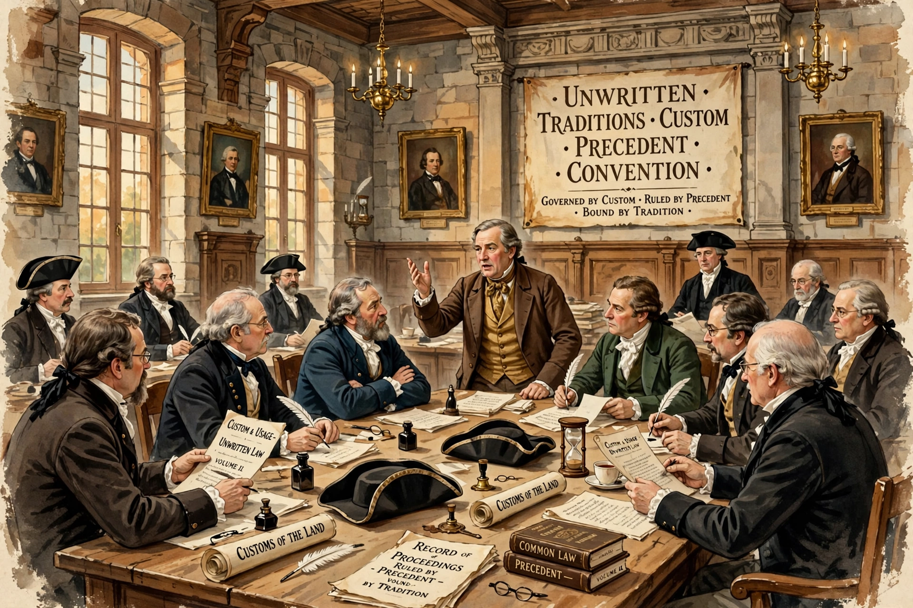

A constitutional convention is an informal and uncodified tradition or custom in a country's political system that is considered binding by political actors, although it is not enforceable in law by the courts. Conventions are especially important in countries with uncodified constitutions such as the United Kingdom, and in Commonwealth realms including Canada, Australia and New Zealand.

Examples include: the monarch appoints as prime minister the person most likely to command the confidence of the lower house and acts on ministerial advice; ministers are individually and collectively responsible to Parliament; the House of Lords does not block money bills (the Salisbury convention); and in Canada, conventions govern the governor general's reserve powers. A.V. Dicey distinguished the law of the constitution from its conventions, and Ivor Jennings proposed a three-part test: precedents, a sense of obligation, and a reason for the rule.
Courts may recognise conventions but generally will not enforce them, as in the Canadian Patriation Reference (1981), which held that patriation without substantial provincial consent was legal but unconstitutional in the conventional sense.